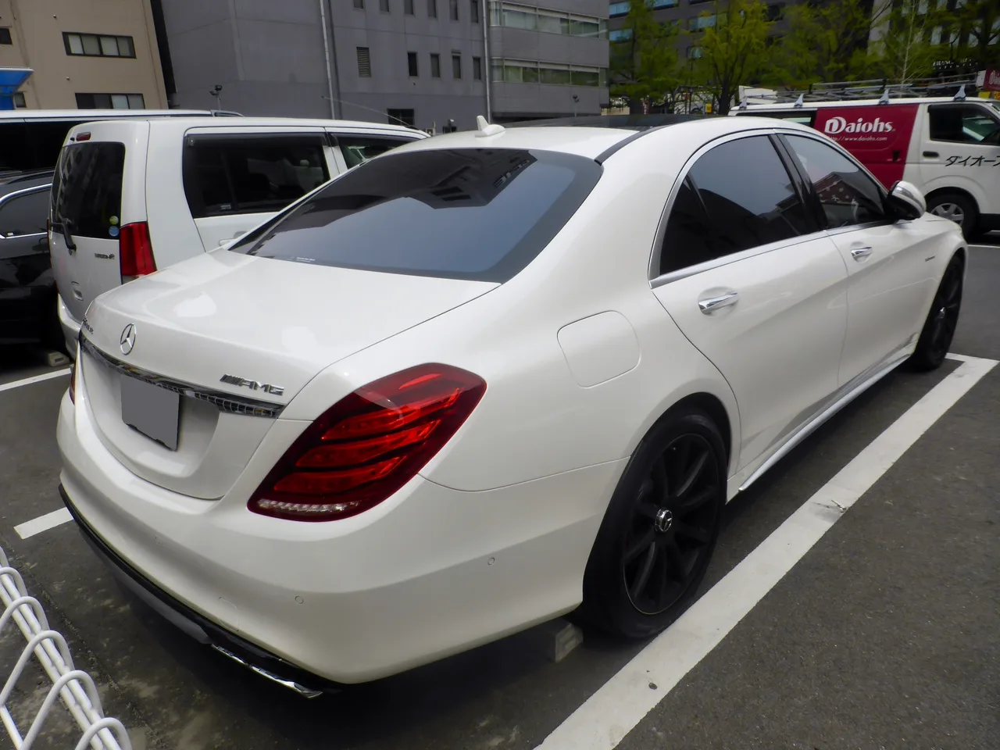

▲ 메르세데스-AMG S63(V222) — 577마력 트윈터보 V8을 얹은 플래그십 고성능 세단으로, 중고가가 신형 AMG C클래스 수준까지 내려왔다
벤츠의 플래그십 고성능 세단 AMG S63(2014~2017년형)의 중고 시세가 흥미로운 지점까지 내려왔습니다. 낮게는 3만5,998달러부터, 평균 4만6,579달러 선에서 거래되고 있습니다. 공교롭게도 이는 신형 메르세데스-AMG C클래스의 가격(5만 달러 살짝 아래)과 거의 겹칩니다. 준중형 고성능 세단 한 대 값으로, 5.5리터 트윈터보 V8 577마력을 품은 플래그십 세단을 살 수 있다는 뜻입니다.
1. 577마력에 0-60마일 3.9초, 포르쉐 911과 동급
2014~2017년형 AMG S63은 5.5리터 트윈터보 V8 엔진으로 577마력과 664lb-ft(약 90kg·m)의 토크를 냅니다. 0-60마일 가속은 3.9초. 흥미로운 건 이 수치가 2026년형 포르쉐 911 카레라와 정확히 같다는 점입니다. 2017년 이후 나온 페이스리프트 모델은 4.0리터 트윈터보 V8로 엔진을 바꾸면서 출력을 603마력까지 끌어올렸고, 가속력도 3.4초로 더 빨라졌습니다. 4,800파운드(약 2.2톤)가 넘는 플래그십 세단이 스포츠카급 가속력을 낸다는 게 이 차의 가장 큰 매력입니다.

▲ AMG S63 후면부 — 2018년형 기준 중고 평균가는 4만6,579달러로, 신형 C클래스와 비슷한 가격대에 형성돼 있다
2. C클래스 값으로 S클래스를 산다
중고 시세를 구체적으로 보면, 2018년형 기준 최저 3만5,998달러부터 최고 7만2,999달러까지 폭이 있지만, 평균은 4만6,579달러 선입니다. 예산 4만 달러면 주행거리 6만마일 안팎의 매물을, 저주행 매물(2만5,000마일 미만)을 원한다면 약 5만2,000달러를, 페이스리프트 이후 모델은 약 6만 달러를 예상하면 됩니다. 신형 AMG C클래스가 5만 달러에 살짝 못 미치는 가격이라는 점을 감안하면, S63은 사실상 'C클래스 값에 S클래스 차체와 배 이상의 출력'을 얻는 셈입니다.
| 구분 | 가격 | 비고 |
|---|---|---|
| S63 중고 최저가(2018년형) | 3만5,998달러 | 577마력, 0-60 3.9초 |
| S63 중고 평균가(2018년형) | 4만6,579달러 | 주행거리 약 6만마일 기준 |
| S63 저주행 매물(2.5만마일 미만) | 약 5만2,000달러 | - |
| 신형 AMG C클래스 | 약 5만 달러 미만 | 준중형 고성능 세단 |
| S63 최고가(2018년형) | 7만2,999달러 | - |
3. 연비 18mpg, 무게 2.2톤 — 감안해야 할 것들
다만 이 정도 성능에는 대가가 따릅니다. 복합 연비는 갤런당 18마일(약 7.7km/L) 수준으로, 대형 V8 세단답게 연비는 기대하기 어렵습니다. 무게도 4,800파운드(약 2,177kg)를 넘습니다. 여기에 7단(초기형) 또는 9단(후기형) 자동변속기가 맞물려 묵직한 주행감을 만들어내지만, 동시에 유지 비용도 그만큼 커집니다. 스포츠카급 가속력을 세단의 몸집으로 구현한 대가는 곧 연료비와 정비비 청구서로 돌아온다는 뜻입니다.
4. 진짜 함정은 유지비
가격만 보면 매력적이지만, 실제 소유 비용을 따져보면 이야기가 달라집니다. 연간 평균 유지비는 약 1,581달러로 추산됩니다. 경정비만 해도 500달러가 넘고, 2만마일 주기로 돌아오는 중정비는 1,500달러를 훌쩍 넘깁니다. 여기에 앞서 언급한 낮은 연비까지 더하면, 매입 가격이 저렴해 보여도 5년 보유 시 총소유비용(TCO)은 신형 C클래스와 비슷하거나 오히려 웃돌 수 있습니다. '싸게 산 스포츠 세단'이 '비싸게 유지하는 세단'으로 바뀌는 지점이 바로 여기입니다.
5. 그래도 살 만한 이유
그럼에도 AMG S63은 여전히 매력적인 선택지입니다. 플래그십 S클래스 특유의 승차감과 편의사양을 그대로 유지하면서, 포르쉐 911급 가속력을 더한 조합은 신차 시장에서 쉽게 찾기 어렵습니다. 유지비 부담을 감수할 수 있는 소비자라면, 신형 준중형 고성능 세단 한 대 값으로 훨씬 큰 체급과 압도적인 가속력을 동시에 누릴 수 있는 흔치 않은 기회입니다. 다만 구매 전 반드시 정비 이력을 꼼꼼히 확인하고, 연료비·정비비까지 포함한 전체 예산을 미리 계산해봐야 후회 없는 선택이 될 수 있습니다.